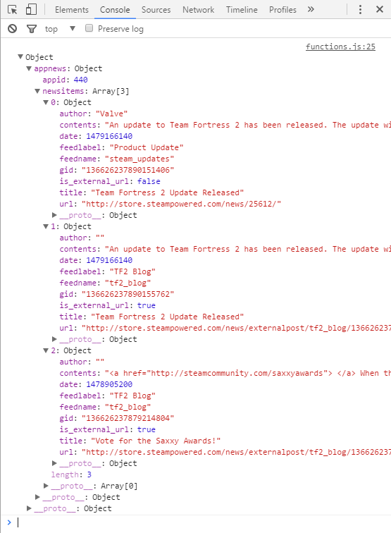

On the previous page, our GET request returned a JSON object from the Steam Web API. As mentioned in the introduction, JSON is one of three formats that can be returned by Steam's Web API. JSON (Javascript Object Notation) is a widely used data storage and communication format that is organized and easy to access. For more information visit JSON.ORG For the purposes of this tutorial, I have set all the calls to return JSON objects to keep things consistent and because that is the format I have the most experience working with.
So far all we have done is accessed the returned JSON object in the console. For example, here is what is returned when we use AppID 440 as a query for GetNewsForApp:
Each Steam Web API method will return a JSON object with different data contents. In the case of this GetNewsForApp query, it returned an object called "appnews" that contained the name:value pairs of "appid:440" and "newsitems:Array[3]". The array is an array of the 3 most recent news items. Each news item contains its own specific name:value pairs data contents. The reason there are 3 objects in the array is because in the GetNewsForApp route in our server file, we specified 3 news stories with a max char length of 300.
To access the data of a JSON object, we have included this line of code in each of our GET request functions to our server:
var response = JSON.parse(req.responseText);The JSON.parse() function converts the JSON string returned from the Steam Web API into a more accessible JSON object. Now that we have an object, we can access its data points in a similar manner to accessing any other Javascript object. So for example, if we wanted to only display the contents of the first news object of the JSON object from the previous example, we could access it by doing something like this:
response.appnews.newsitems[0].contentsThis will give us the first news story:
An update to Team Fortress 2 has been released. The update will be applied automatically when you restart Team Fortress 2. The major changes include: * Fixed a bug related to using the Dead Ringer while carrying the flag; * Fixed some Strange map filters displaying the wrong map names in their descr...
We can add functions to display the various compenents of the JSON objects to our Javascipt functions file. Below I have created a data entry box and button for the GetNewsApp from earlier in the tutorial, but I have added a new function that contains a showContent function that will display the contents of all 3 of the news items for a game.